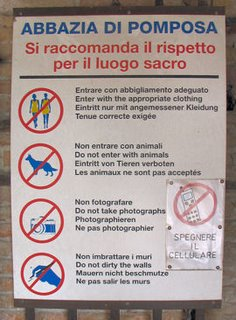
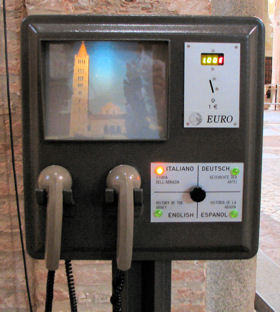

Hot summers in Italy demand light clothing. But if you plan to visit churches and monasteries, you might be prompted at the entrance with a sign that reminds you some basic visitation rules that apply to all sacred places. These directions may include to wear appropriate clothing, to refrain from walking around during a celebration, to mute your cell phone and to leave pets out. Italian churches are rich of history and in constant "fund raising mode" to face recurring maintenance and restoration costs. Donations in any form are always appreciated. One way to contribute is to listen to the audio-visual history guides that are often present in the most popular churches.
These devices haven't changed much in the past 20 years (except for the price of the recording), and they offer a succinct summary of the key historical facts of the place in various languages. I consider them the precursor of the MP3 audio guides that are becoming increasingly popular for portable devices like the iPod.